Votre guide spirituel personnel et quotidien.
Télécharger sur Google PlayPlongez au cœur des arts divinatoires avec une application unique qui fusionne sagesse ancestrale et technologie moderne. Que vous cherchiez des réponses à vos questions sentimentales, professionnelles ou spirituelles, "Le Miroir du Destin" vous offre une clarté immédiate et profonde.
Une expérience holistique complète regroupant les outils les plus puissants de la voyance traditionnelle :
Rejoignez le cercle des initiés et commencez votre voyage initiatique dès aujourd'hui. L'univers a un message pour vous... saurez-vous l'écouter ? Téléchargez Le Miroir du Destin et reprenez le contrôle de votre futur.
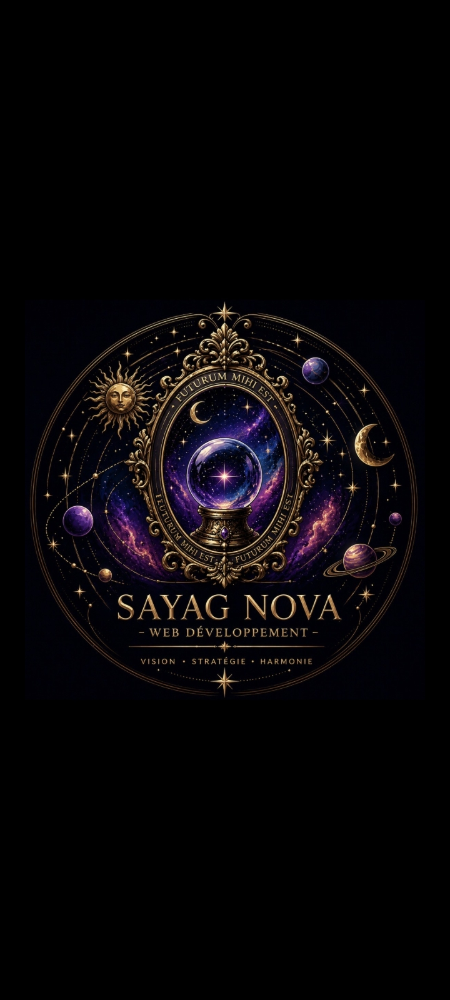
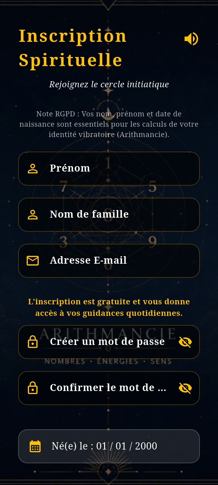
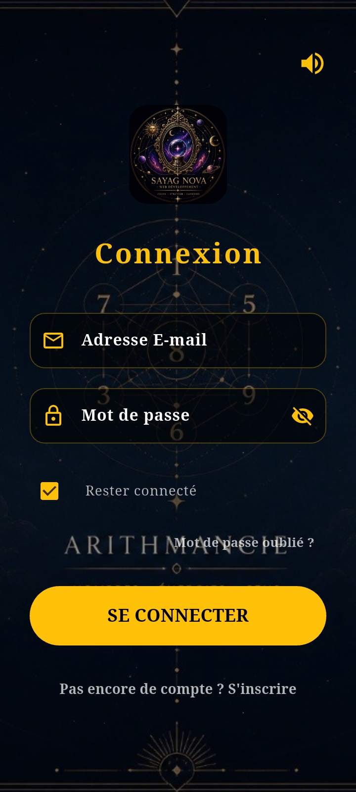
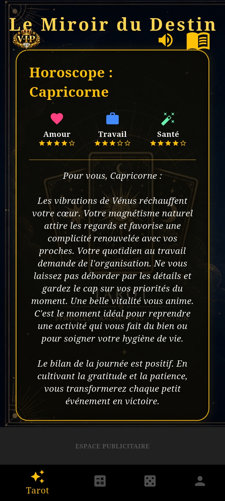
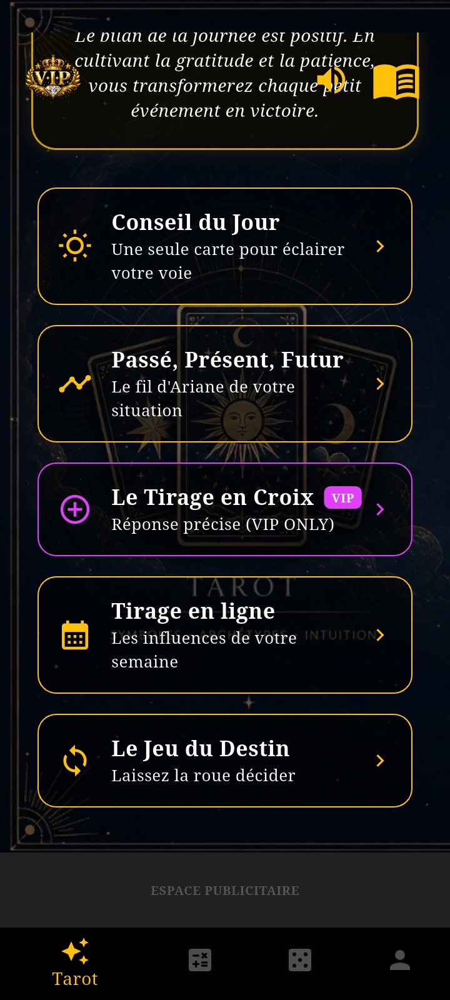
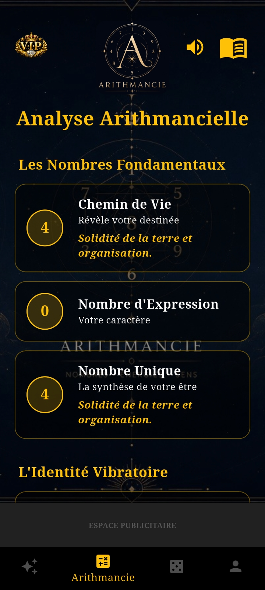
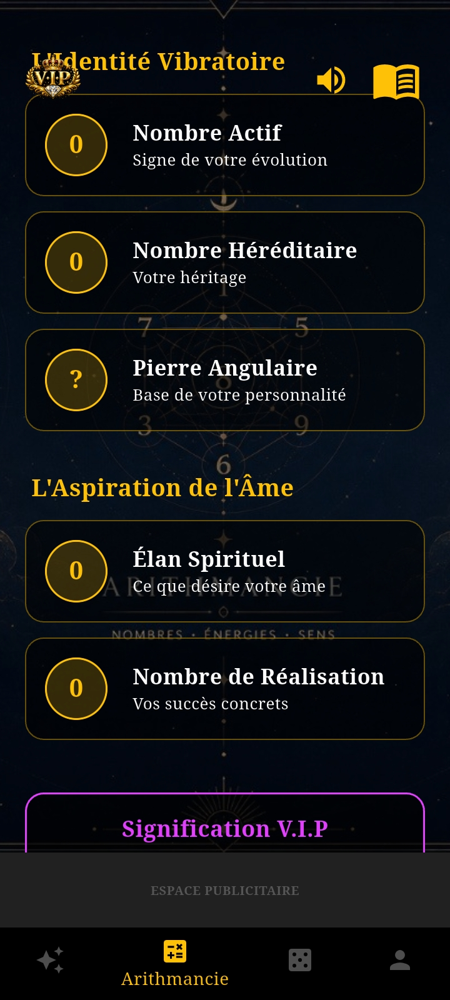
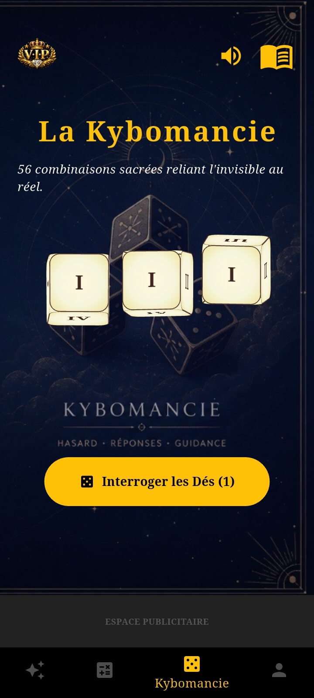
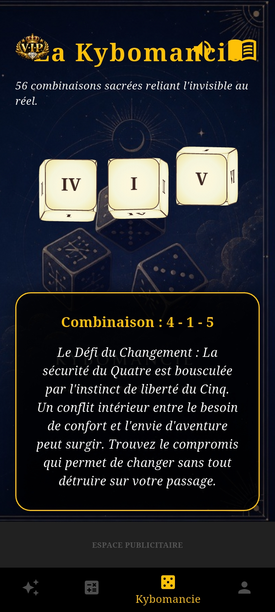
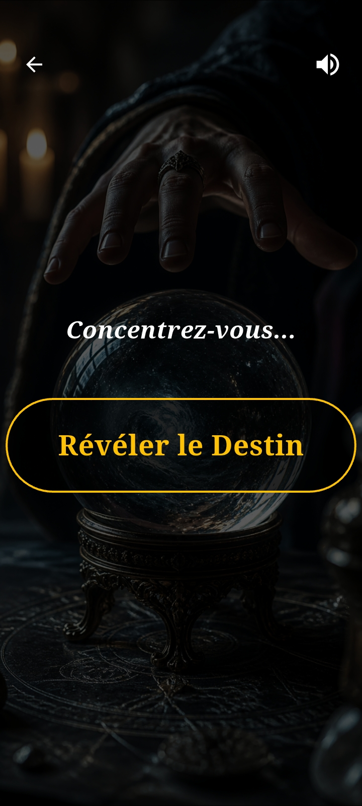
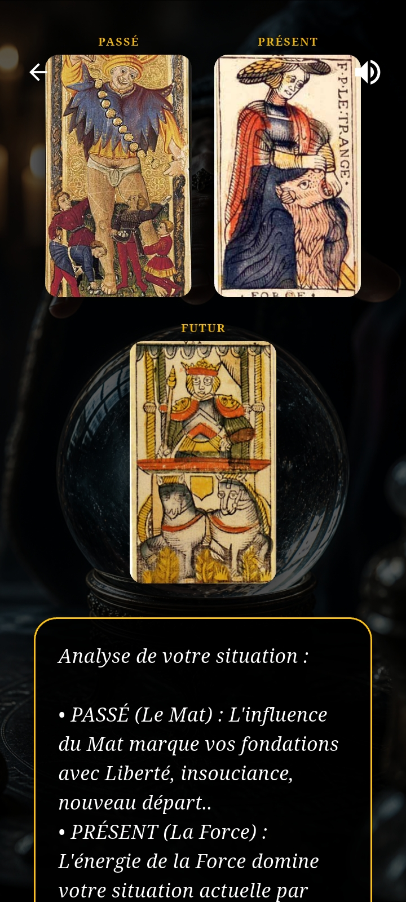
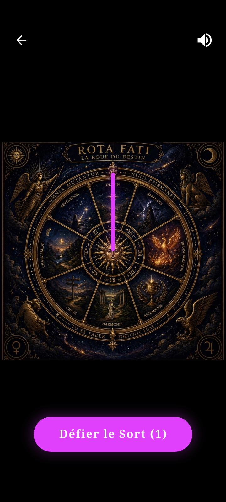
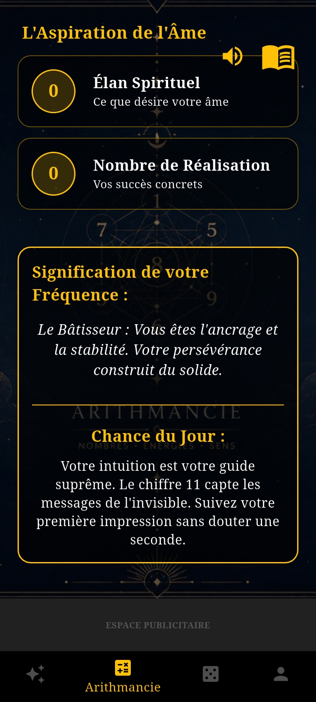
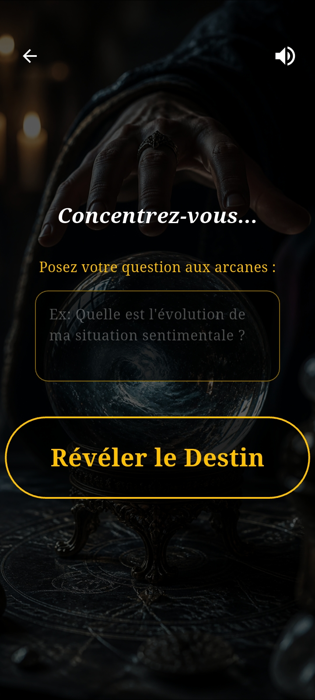
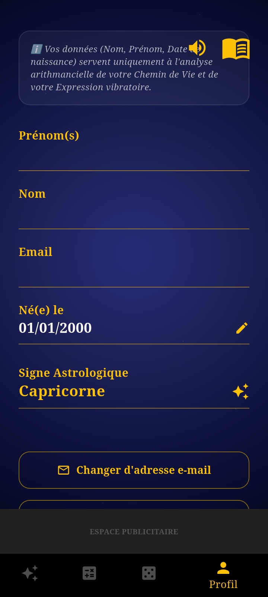
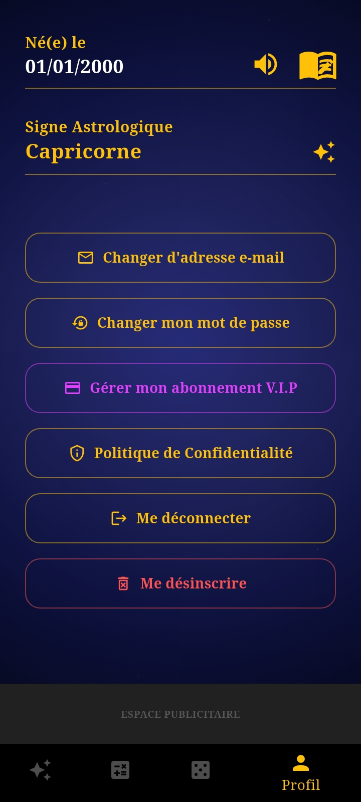
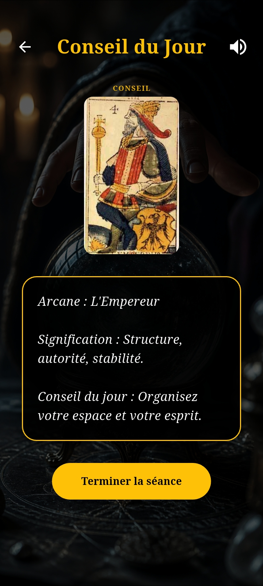
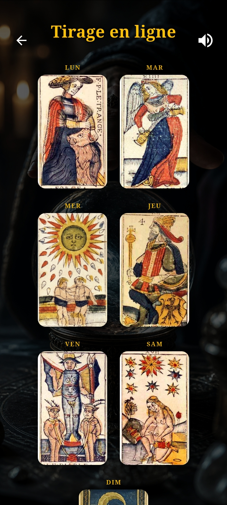
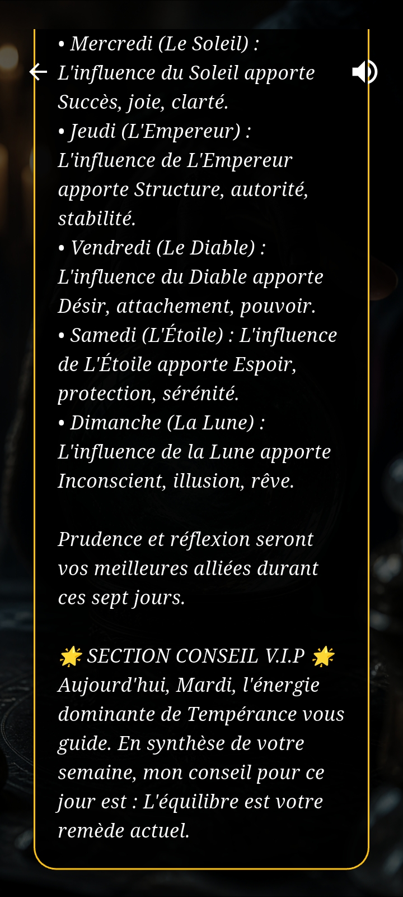